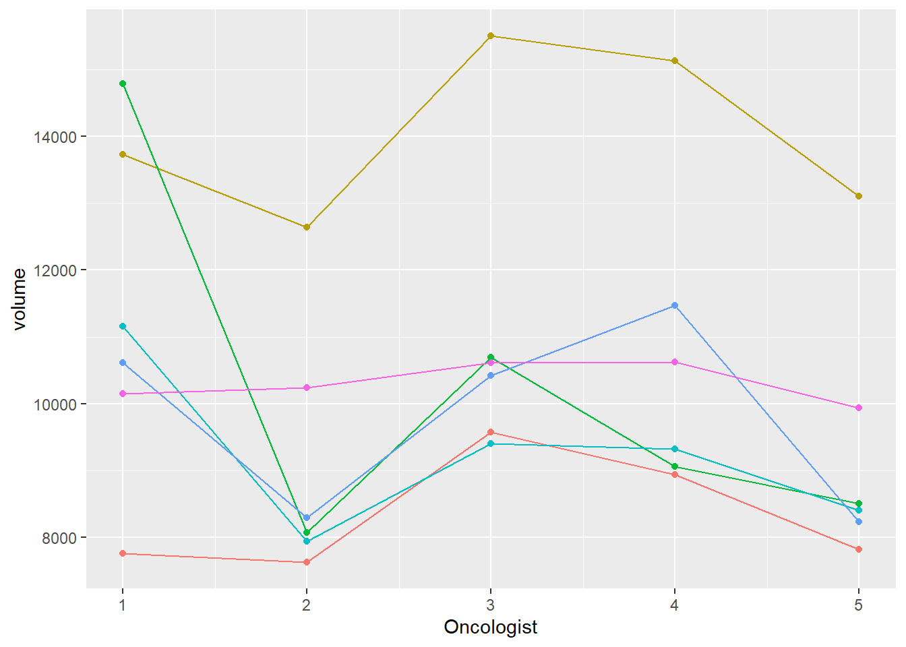

For testing, use \(\alpha=0.05\) unless otherwise specified. Datsets can be found under our shared drive.
In this exercise, you will replicate some of the analyses on the measurements of measurements of sub-mandibular gland, practising the use of a random interaction term.
The file practical3_meanrightvolume.sav contains data similar to the data shown in the lecture, only this time, we consider the right hand side mean organ volumes. We are interested in answering the research question: “Do the oncologist measure the same volume?”

For SPSS Users
You can either use the scatter plot under Graphs > Legacy dialogs (and double clicking to connect the dots per subject), or the Chart builder (again, double clicking to connect the dots per subjects)
For SPSS Users
Use Analyze > Mixed Models > Linear in SPSS to estimate the two-way ANOVA model including a random effect for subjects and the effect of oncologist fixed SPSS-users: do not forget to check Parameter estimates for fixed effects and Tests for covariance parameters under Statistics.
For R Users
Make sure the concerning variables are treated as categorical in your model by using the factor function.
practical3_rightvolumes.sav. Take a look at the data and build the model to answer this question. Compare the model with and without an interaction effect between oncologist and subject. Use the likelihood ratio test (LRT) to compare between the two nested models: the model with and without interaction term, using the same data set.For R Users
The model with the interactions looks like the following: lmer(Volume ~ 1 + Oncologist + (1| Subject) + (1|Subject:Oncologist),data=d, REML=T)
Make sure that the Oncologist and Subject variables are defined as factors in R. To run the LRT, you need to calculate the difference between \(2\cdot logLik\) of the two models, \(\Delta\). To carry out the likelihood ratio test (LRT), we take advantage of the fact that this difference is asymptotically distributed like \(\chi^2\), whose degrees of freedom equals to the difference between the two models, in this case it is equal to one.
To calculate the p-value associated with the null hypothesis (that there is no difference between the two models), you would calculate the probability of pchisq(\(\Delta\), df=1, lower.tail=FALSE). If you reject the null hypothesis, you would conclude that you have compelling evidence that there is a different effect of oncologists when comparing one subject to the other. Failing to reject the null, you would conclude that there is no evidence for a changing oncologist effect for different subjects.
In this exercise, you will use mixed effects models in an animal study examining the effect of glucoses injection on lipid absorption in various organs. Ten mice are randomly assigned to two groups. One group receives an injection of glucoses, the other does not (control group). Next, the absorption of radioactive lipids is measured in different organs and in blood plasma (some measurements were repeated). You will find the dataset in the file practical3_lipidabs.sav.
Where:
\(Y_{ij}\) : is the \(j^{th}\) log_lipid measurement for the \(i^{th}\) mouse (ln_abs)
\(\gamma_{00}\) : overall mean lipid absorption (for all mice)
\(\gamma_{10}\) : overall mean organ effect (for all mice)
\(a_{0i}\) : the random effect for the \(i^{th}\) mouse, \(a_{0i} \sim N(0,s_{s0}^2)\)
\(a_{1i}\) : the random organ effect for the \(i^{th}\) mouse, \(a_{i1} ~ N(0,s_{s1}^2)\)
\(e_{ij}\) : the residuals \(e_{ij} \sim N(0,s_r^2)\)
With \(\beta_{0i}\): being the mean lipid absorption specific for each mouse and \(\beta_{1i}\) being the specific effect of organ per mouse.
ln_abs) as the outcome variable. Fit the model and interpret the results. What are the estimated (log) absorption means for each organ?For R Users
The formula you need for the lmer function is as follows:
ln_abs ~ 1 + organ + (1|mouse) + (1|mouse:organ)
Note: based on the previous model, we concluded that the organ effect does not vary across mice, hence we do not include a random effect \(a_{1i}\) for the slope \(\beta_{1i}\)).
We now consider the complete data set. We investigate the effect of glucose injection on lipid absorption (both on overall average (through intercept \(\beta_{0i}\)) as well as by organ effect (slope: \(\beta_{1i}\)) ) by fitting this model where:
\[\begin{aligned} Y_{ij}&=\beta_{0i}+\beta_{1i}\cdot X^{(organ)}_{ij} +e_{ij} \\ \beta_{0i}&=\gamma_{00}+\gamma_{01}\cdot X^{(glucosis)}_{i}+a_{0i} \\ \beta_{1i}&=\gamma_{10}+\gamma_{11}\cdot X^{(glucosis)}_{i} \end{aligned}\]